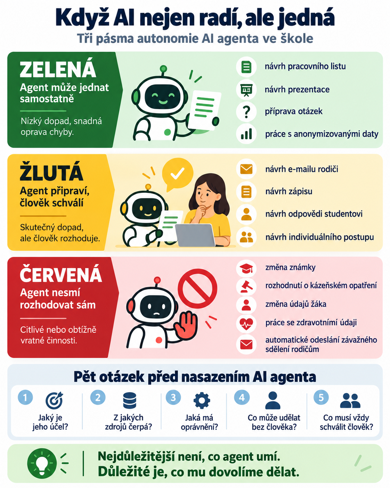

Je rozdíl mezi větami:
„Navrhni mi e-mail rodičům.“
a
„Pošli tento e-mail rodičům.“
Na první pohled je mezi nimi jen jedno sloveso.
Z pohledu odpovědnosti je mezi nimi ale obrovský rozdíl.
V prvním případě umělá inteligence vytvoří návrh. Člověk si ho přečte, rozhodne se, zda je správný, případně ho upraví a teprve potom ho odešle.
Ve druhém případě AI nejen radí.
Jedná.
A právě tím se dostáváme k jedné z nejdůležitějších otázek další etapy umělé inteligence:
Co se změní, když AI přestane být pouze poradcem a dostane možnost dělat věci naším jménem?
Od chatbotu k agentovi
Na začátku generativní AI jsme si zvykli na jednoduchý model:
Člověk zadá otázku → AI odpoví.
Potom přišly nástroje, které dokázaly pracovat se soubory, vyhledávat informace, analyzovat data nebo vytvářet dokumenty.
A dnes se posouváme ještě dál.
AI agent může dostat cíl, nástroje a určitá oprávnění a následně sám rozhodovat o dílčích krocích potřebných k dokončení úkolu.
Může například:
- projít několik webových stránek;
- otevřít dokumenty;
- zpracovat data;
- vytvořit soubor;
- používat propojené aplikace;
- připravit další kroky;
- v některých případech také něco odeslat, změnit nebo zveřejnit.
Oficiální materiály OpenAI popisují agenty, kteří kombinují práci s webem, soubory a počítačem; Microsoft u autonomních agentů v Copilot Studiu popisuje reakce na události a provádění pracovních postupů v rámci nastavených oprávnění a hranic.
Nejdůležitější ale nejsou názvy produktů.
Podstatná je změna role AI.
Z nástroje, který něco navrhuje, se může stát nástroj, který něco vykonává.
Proč je to jiný typ problému?
Když chatbot vytvoří chybnou odpověď, člověk ji může přečíst a odmítnout.
Když agent provede chybnou akci, chyba už může mít skutečný dopad.
Představme si několik situací.
AI vytvoří nepovedený pracovní list.
Nepříjemné, ale snadno opravitelné.
AI vytvoří návrh e-mailu rodiči, ve kterém je nepřesná informace.
Učitel ho může před odesláním opravit.
AI sama rozešle e-mail rodičům.
Teď už nestačí říct:
„Model se spletl.“
E-mail byl skutečně odeslán.
Někdo rozhodl, že agent takové oprávnění dostane.
A někdo musí nést odpovědnost za systém, který tuto akci umožnil.
Kdo tedy nese odpovědnost?
Jednoduchá odpověď zní:
Ne agent.
Umělá inteligence není kolega, kterému můžeme na poradě říct:
„Tohle byla tvoje chyba, příště si dej pozor.“
Agent nemá profesní odpovědnost učitele, ředitele, správce systému ani organizace.
V praktickém a institucionálním smyslu proto odpovědnost za nastavení a použití systému nesou lidé a instituce, které:
- stanovily jeho účel;
- vybraly nástroje;
- nastavily oprávnění;
- rozhodly, kde může jednat autonomně;
- určily, kdy musí požádat člověka o souhlas.
To je možná méně futuristické než debata o tom, zda AI jednou získá vlastní vědomí.
Pro školy je to ale mnohem praktičtější otázka:
Kdo dovolil agentovi udělat právě tuto věc?
Nejdůležitější není, co agent umí
Při představování nových AI systémů často slyšíme otázku:
Co všechno to dokáže?
Ve škole bychom měli přidat ještě jednu:
Co z toho mu vůbec dovolíme dělat?
To jsou dvě různé věci.
Agent může technicky umět:
- otevřít e-mail;
- vytvořit dokument;
- změnit záznam;
- prohledat databázi;
- poslat zprávu;
- aktualizovat kalendář.
To ale neznamená, že má mít všechna tato oprávnění.
Stejně jako zaměstnanec školy nemá automaticky přístup ke všem informačním systémům jen proto, že by je dokázal používat, ani AI agent nepotřebuje získat všechna dostupná oprávnění.
V kybernetické bezpečnosti se používá princip nejmenšího nutného oprávnění.
Agent dostane pouze to, co skutečně potřebuje pro svůj úkol.
Pro školy bude tento princip stále důležitější.
Tři úrovně autonomie
Pro praktické použití si můžeme činnosti AI rozdělit do tří skupin.
Zelená: agent může jednat samostatně
Jde o činnosti s malým dopadem a snadnou možností opravy.
Například:
- připravit návrh pracovního listu;
- vytvořit několik variant cvičení;
- uspořádat veřejné zdroje;
- vytvořit návrh prezentace;
- připravit seznam otázek;
- zpracovat anonymizovaná data pro učitele.
Pokud agent udělá chybu, nic zásadního se nestane.
Člověk výsledek jednoduše nepoužije.
Žlutá: agent připraví, člověk schválí
Sem patří činnosti, které mají skutečný dopad, ale AI může připravit jejich návrh.
Například:
- návrh e-mailu rodiči;
- návrh změny termínu;
- návrh zápisu;
- návrh odpovědi studentovi;
- návrh dokumentu pro vedení;
- návrh individuálního výukového postupu.
AI připravuje.
Člověk rozhoduje.
Červená: agent nesmí rozhodovat sám
Sem patří citlivé nebo obtížně vratné činnosti.
Například:
- změna známky;
- rozhodnutí o kázeňském opatření;
- změna údajů žáka;
- rozhodování o podpůrném opatření;
- práce se zdravotními nebo jinými zvlášť citlivými údaji;
- automatické odeslání závažného sdělení rodičům;
- rozhodnutí, které má právní nebo významný osobní dopad.
Tady by AI mohla maximálně pomoci s přípravou podkladů.
Poslední rozhodnutí musí zůstat na člověku.

Human in the loop není ozdoba v patičce
Na řadě školních materiálů dnes vidíme formulace typu:
AI + 👤 | HUMAN IN THE LOOP
Takové označení má smysl jen tehdy, pokud popisuje skutečný způsob práce.
Lidský dohled totiž neznamená:
„Člověk se někde v procesu vyskytoval.“
Znamená:
V důležitém okamžiku existoval člověk, který mohl akci zastavit, změnit nebo odmítnout.
Pokud agent sám vytvoří, schválí a odešle citlivý dokument a učitel se o něm dozví až později, člověk ve skutečnosti nebyl „in the loop“.
Byl až after the loop.
A to je velký rozdíl.
Co by měl mít každý školní AI agent?
Pro vlastní projekty může být užitečná jednoduchá karta agenta.
Nemusí být technická.
Stačí pět otázek.
1. Jaký je jeho účel?
Jednou větou.
Například:
„Pomáhá učiteli připravovat varianty pracovních listů.“
Ne:
„Pomáhá se vším.“
Čím širší účel, tím obtížněji se nastavují bezpečné hranice.
2. Z jakých zdrojů může čerpat?
Veřejný web?
Učitelovy dokumenty?
Školní směrnice?
Data žáků?
Každý další zdroj mění rizikovost systému.
3. Jaká má oprávnění?
Může pouze číst?
Může vytvořit soubor?
Může něco změnit?
Může něco odeslat?
Tady bývá největší rozdíl mezi chatbotem a agentem.
4. Co může udělat bez člověka?
Tato část má být konkrétní.
Například:
„Může vytvořit návrh pracovního listu a uložit ho do pracovní složky.“
5. Co musí vždy schválit člověk?
Například:
„Jakoukoli komunikaci směrem k žákům nebo rodičům.“
„Jakoukoli změnu dat.“
„Jakékoli rozhodnutí týkající se jednotlivého žáka.“
Taková karta může být mnohem užitečnější než desetistránkový seznam obecných zásad.
Co když agent dostane dobrý pokyn?
Může nás napadnout:
„Stačí mu přece napsat, že nemá dělat nic nebezpečného.“
Jenže instrukce a oprávnění nejsou totéž.
Pokud napíšeme:
„Nikdy neposílej e-mail bez mého svolení,“
ale zároveň agentovi technicky umožníme e-maily samostatně odesílat, spoléháme pouze na to, že instrukci vždy správně pochopí a dodrží.
Bezpečnější systém nastaví pravidlo také technicky.
Agent například:
- připraví e-mail;
- zobrazí jeho návrh;
- zastaví se;
- čeká na potvrzení člověka;
- teprve potom může dojít k odeslání.
Dobrá instrukce je užitečná.
Dobré omezení je spolehlivější.
Co když agent pracuje dlouho?
Další změnu přinášejí dlouhodobě běžící agenti.
Běžný chatbot dostane otázku a během několika sekund nebo minut odpoví.
Agent nastavený pro dlouhodobější nebo opakované workflow se může vracet k úkolu, sledovat změny nebo pokračovat mezi jednotlivými konverzacemi.
To má velkou výhodu.
Nemusíme mu stále znovu vysvětlovat stejný úkol.
Zároveň ale vzniká nový problém:
Čím déle agent pracuje bez člověka, tím více dílčích rozhodnutí může udělat.
Každé z nich může být samo o sobě malé.
Jejich kombinace ale může systém postupně odvést jinam, než uživatel původně zamýšlel.
Proto je důležité nejen schválení na začátku.
Potřebujeme také:
- možnost kontrolovat průběh;
- historii provedených akcí;
- možnost zastavit práci;
- jasné hranice;
- kontrolní body během delších úkolů.
Autonomie totiž není jednorázová vlastnost.
Je to rozsah prostoru, ve kterém jsme systému dovolili rozhodovat bez nás.
Jak to vysvětlit studentům?
Debata o AI agentech je výborným tématem pro občanskou nauku, informatiku i třídnickou hodinu.
Není potřeba vysvětlovat API nebo programování.
Stačí jednoduchá situace.
Školní agent
Představte si AI, která pomáhá ve škole.
Může:
- připravovat pracovní listy;
- kontrolovat kalendář;
- navrhovat e-maily;
- připomínat termíny;
- pracovat se školními dokumenty;
- komunikovat se studenty.
Úkolem žáků je každou činnost zařadit:
Může udělat sám
Musí požádat člověka o potvrzení
Nesmí dělat
Pak přidáme nové situace:
„Může agent omluvit absenci?“
„Může doporučit známku?“
„Může poslat rodiči upozornění?“
„Může pracovat s lékařskou zprávou?“
„Může studentovi automaticky změnit termín zkoušení?“
Velmi rychle zjistíme, že hranice nejsou vždy samozřejmé.
A právě o tom diskuse je.
Kdo odpovídá za chybu?
Představme si situaci:
Škola používá AI agenta.
Agent odešle rodičům nesprávnou informaci.
Kdo je odpovědný?
Vývojář modelu?
Firma, která vytvořila aplikaci?
Správce systému?
Učitel, který agenta spustil?
Škola?
Jednoduchá univerzální odpověď neexistuje.
Záleží na konkrétním systému, právním rámci, nastavení oprávnění a způsobu použití.
Z pedagogického hlediska je ale důležitější jiná otázka:
Měli jsme systém navržený tak, aby člověk mohl chybu zachytit ještě předtím, než způsobí škodu?
Pokud ano, technologie podporovala lidské rozhodování.
Pokud ne, možná jsme agentovi dali větší autonomii, než bylo potřeba.
Čím schopnější AI, tím důležitější jsou hranice
U méně schopného systému se často ptáme:
„Zvládne to?“
U velmi schopného systému se čím dál častěji budeme ptát:
„Chceme vůbec, aby to dělal sám?“
To je zásadní změna.
Technologický vývoj nás může velmi rychle dostat do situace, kdy problémem nebude nedostatek schopností AI.
Problémem bude rozhodnout:
- které schopnosti použít;
- komu je zpřístupnit;
- na jaká data;
- s jakými oprávněními;
- pod jakým dohledem.
Možná tedy vstupujeme do období, kdy se jedna z nejdůležitějších digitálních dovedností nebude jmenovat „promptování“.
Bude se jmenovat:
nastavování hranic.
Závěr: odpovědnost nelze delegovat stejně snadno jako úkol
Umělá inteligence může převzít stále větší část práce.
Může hledat informace.
Může vytvářet dokumenty.
Může ovládat software.
Může plánovat další kroky.
A stále častěji může také jednat.
Ale existuje jedna věc, kterou jí nemůžeme jednoduše předat spolu s přístupovým oprávněním.
Odpovědnost.
Pokud chceme AI agenty využívat smysluplně, nestačí řešit, zda jsou dostatečně inteligentní.
Musíme také vědět:
Co mohou dělat?
Co mohou dělat sami?
Kdy se musí zastavit?
Kdo jejich práci kontroluje?
A kdo může říct:
„Ne. Tohle rozhodnutí zůstává na člověku.“
Možná právě tato schopnost nebude v době autonomních AI systémů známkou technologické zaostalosti.
Možná bude známkou toho, že technologii skutečně používáme rozumně.
Námět do výuky: Nakreslete hranice agentovi
Čas: 15–20 minut
Předmět: občanská nauka, informatika nebo třídnická hodina
Dejte studentům fiktivního školního AI agenta a deset činností.
Studenti je rozdělí do tří kategorií:
- může udělat sám;
- musí požádat člověka o potvrzení;
- nesmí dělat.
Poté musí u dvou sporných případů své rozhodnutí obhájit.
Na závěr položte otázku:
„Je důležitější, co AI umí, nebo co jí dovolíme dělat?“
Cílem není najít jednu správnou hranici.
Cílem je pochopit, že s rostoucí schopností AI roste také význam oprávnění, kontroly a lidské odpovědnosti.
Související čtení
- Human in the Loop jako další krok v době AI – první díl série.
- AI a role, které ve škole chyběly – druhý díl série.
- Učí se žák, nebo za něj přemýšlí AI? – třetí díl série o učení a přemýšlení.
- Co je AI agent? – základní pojmy a principy agentů.
- Datoví agenti a lidské schvalování – bezpečnější automatizace ve škole.
Oficiální zdroje
- OpenAI: New tools for building agents – nástroje a agentní workflow.
- OpenAI: Introducing ChatGPT agent – práce s nástroji, potvrzování akcí a aktivní dohled.
- Microsoft Learn: AI agent shared responsibility model – oprávnění, lidský dohled a odpovědnost.
- Microsoft Learn: Design autonomous agent capabilities – hranice autonomie, schvalování a nejmenší oprávnění.